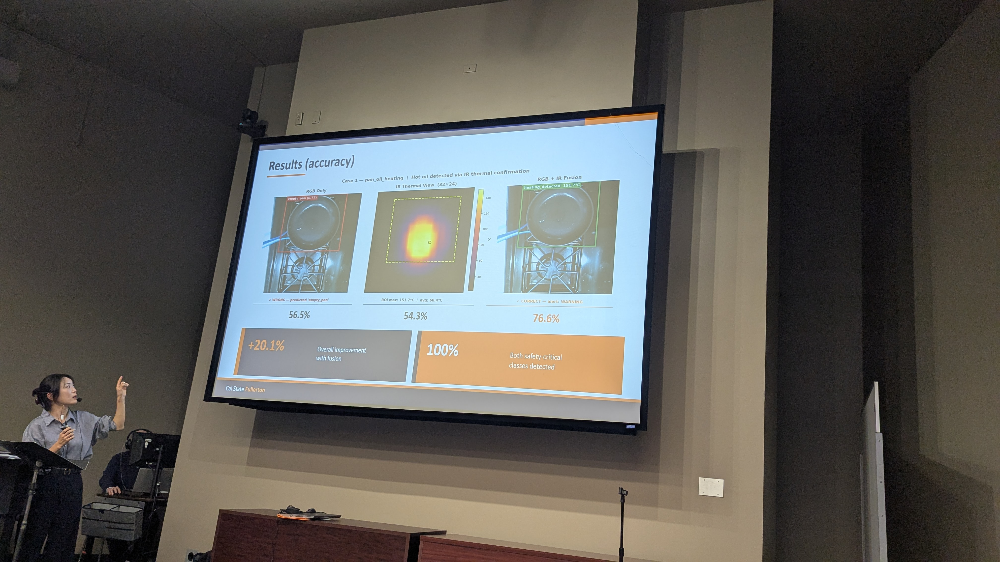
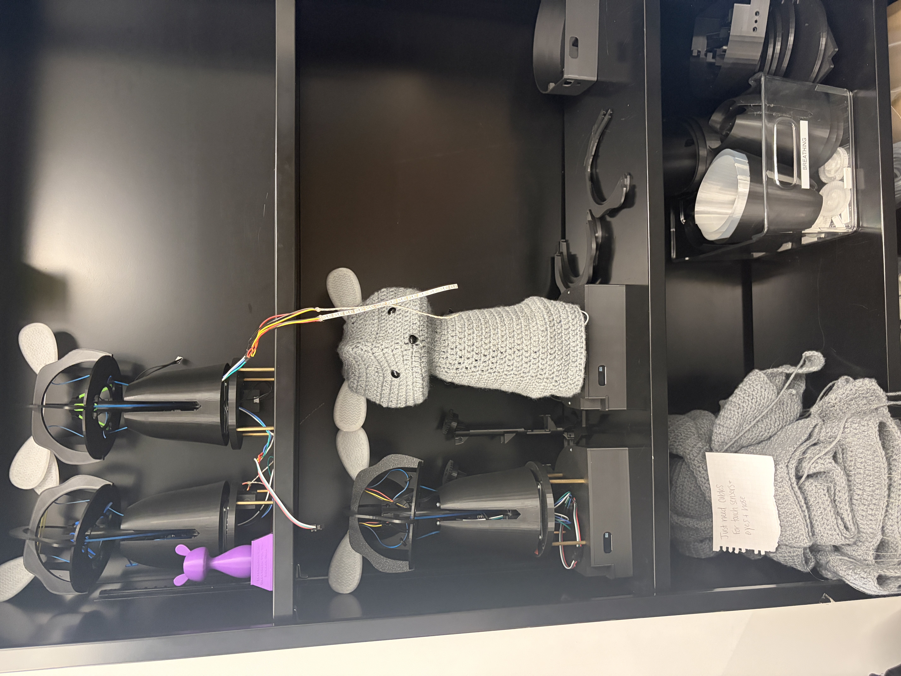

Sola Lhim
About me
Hi! I'm Sola, a Master's student in Computer Science at California State University, Fullerton (CSUF). My research interests lie in Large Language Models (LLMs), Machine Learning for Scientific Experiments, and Robotics & Sensing. I'm particularly interested in developing intelligent systems that can learn from feedback, interact with the physical world, and be evaluated for reliability. My research experience spans LLM faithfulness evaluation, reinforcement learning for closed-loop physical experiments, and multimodal sensing for real-world applications. Before transitioning to computer science, I studied law and politics in Japan and worked as a Japanese–Korean translator and documentary researcher. This interdisciplinary background has shaped my curiosity and the way I approach research across different fields. ⛳ Golf used to be my favorite hobby, but somehow, exploring new research ideas has become my new favorite pastime.
I am applying to Ph.D. programs for Fall 2027.
Research in Action
A glimpse into my research, experiments, and experiences beyond the code.



Closed-Loop Colloidal Assembly · CSUF

Blossom Robot Study · USC Interaction Lab
News
- 2026: First-author paper accepted at the IEEE Workshop on AI for HealthCare (AIHC 2026).
- May 2026: Joined UC Riverside as a research intern with Zhouxing Shi.
- May 2026: Started RL-driven nanoparticle patterning research with Nabila Tanjeem at CSUF.
- Aug 2025: Began the M.S. in Computer Science at Cal State Fullerton.
Education
Aug. 2025 - Present, Department of Computer Science, California State University, Fullerton, M.S. (GPA 4.0)
Apr. 2010 - Mar. 2015, College of Law and Politics, Rikkyo University, Bachelor of Arts
Publications
- Sola Lhim, K. George, T. Nobari, and A. Panangadan. Affordable Edge RGB–IR Fusion for Kitchen Safety Monitoring in Permanent Supportive Housing. IEEE International Conference on Information Reuse and Integration (IRI), Workshop on AI for Healthcare (AIHC), 2026. [paper]
Manuscripts in Preparation
- Proof-Step-Level Faithfulness Evaluation for LLM Autoformalization. First author. Manuscript in preparation. (Preprint planned)
- Closed-Loop Reinforcement Learning for Light-Driven Colloidal Assembly. Co-author. Manuscript in preparation.
Submitted Work
- Designing a Haptic-Guided Breathing System with Integrated ECG Sensing on the Blossom Robot. Co-author. Submitted to ACM/IEEE International Conference on Human-Robot Interaction (HRI), 2027.
- A Reinforcement Learning Framework for Self-Limiting Colloidal Self-Assembly. First author. Abstract submitted to APS Global Physics Summit, 2027.
Research Experience
- Research Intern, University of California, Riverside, with Zhouxing Shi (May 2026 - Present). Found that LLM formalizers silently repair flawed informal proofs, so kernel acceptance says nothing about faithfulness; built an edit-blind judge detecting 36.8–46.7% of these cases at a 3.5% false-positive rate.
- Research Assistant, Cal State Fullerton, with Nabila Tanjeem (May 2026 - Present). Built a real-time closed-loop control system linking software and optical hardware, and use RL to optimize light-exposure patterns for target nanoscale particle formation.
- Research Assistant, Cal State Fullerton, with Anand Panangadan (Aug. 2025 - May 2026). Built a Raspberry Pi 5 module with RGB and thermal cameras and a fusion pipeline that raised cooking-state classification accuracy from 65% to 78%.
Other Experience & Projects
- Data Engineer Intern, Fullerton College (Feb. 2025 - Aug. 2025). Built a centralized Azure data platform with CI/CD and automated ETL, replacing manual reporting for 50+ staff.
- US Citizenship Interview Prep App. A React Native app on the App Store and Google Play with a FastAPI backend for voice-based interview simulation.
- Japanese–Korean Translator (Dec. 2018 - Aug. 2025). Documentaries and corporate research projects.